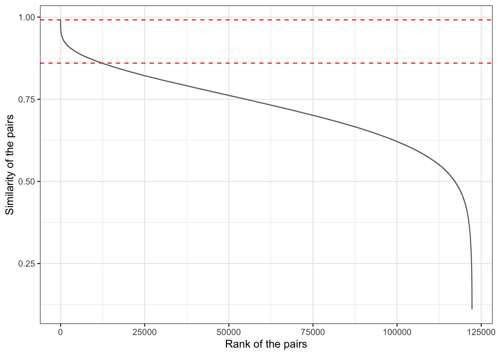
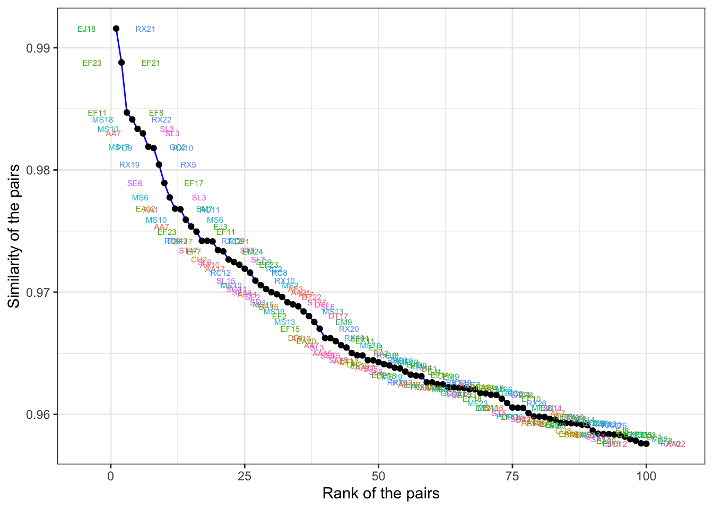
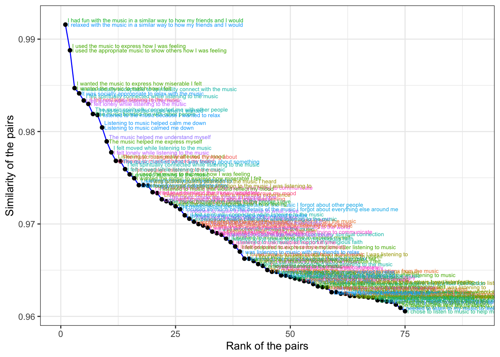

Similarities between the statements obtained from semantic (content meaning) analysis using LMM. This \(495\times495\) matrix is the input to this analysis.
Read similarity data
Distance matrix and item categories (sub-constructs).
Collapse matrix into data frame and retain properties
similarity
Column
Row
Column2
Row2
index
rank
1
0.99157
EJ18
RX21
I had fun with the music in a similar way to how my friends and I would
I relaxed with the music in a similar way to how my friends and I would
9944
1
3
0.98879
EF23
EF21
I used the music to express how I was feeling
I used the appropriate music to show others how I was feeling
106147
2
5
0.98470
EF11
EF8
I wanted the music to express how miserable I felt
I wanted the music to match how I felt
99204
3
7
0.98413
MS18
RX22
It was socially acceptable to spirituality connect with the music
It was socially appropriate to relax with the music
10630
4
9
0.98336
MS10
SL3
I felt spiritually connected while listening to the music
I felt lonely while listening to the music
48737
5
11
0.98299
AA7
SL3
I felt nostalgic listening to the music
I felt lonely while listening to the music
48852
6
Plot ranked similarity values

It will require some manual exploring to learn whether the similarities are good and reliable proxies for what we would call overlapping items. These similarities can be used towards that end.
Explore overlapping items
similarity
Column
Row
Column2
Row2
index
rank
ColumnC
RowC
ColumnRowSame
0.93888
FA10
FA8
I preferred listening to songs I knew rather than ones I didn’t know
Everybody loves this music so I felt like I had to
244035
499
FA
FA
TRUE
0.92308
FA8
FA7
Everybody loves this music so I felt like I had to
I listened to the music because I am familiar with it
243538
1294
FA
FA
TRUE
0.90482
FA6
FA5
The music had a very familiar feeling
The experience had a familiar vibe because of the music
242546
3071
FA
FA
TRUE
0.90096
FA10
FA7
I preferred listening to songs I knew rather than ones I didn’t know
I listened to the music because I am familiar with it
243540
3588
FA
FA
TRUE
0.88042
FA7
FA2
I listened to the music because I am familiar with it
I am familiar with the musical genre
241062
7184
FA
FA
TRUE
0.87579
FA3
FA1
The music was very familiar to me
I was compelled to listen because the song is so familiar
240563
8264
FA
FA
TRUE
0.87558
FA9
FA7
I wanted to listen on a device that would allow me to specifically choose what music I listen to
I listened to the music because I am familiar with it
243539
8308
FA
FA
TRUE
0.87532
FA7
FA1
I listened to the music because I am familiar with it
I was compelled to listen because the song is so familiar
240567
8379
FA
FA
TRUE
0.84564
FA9
FA8
I wanted to listen on a device that would allow me to specifically choose what music I listen to
Everybody loves this music so I felt like I had to
244034
16679
FA
FA
TRUE
0.84409
FA8
FA1
Everybody loves this music so I felt like I had to
I was compelled to listen because the song is so familiar
240568
17160
FA
FA
TRUE
0.83706
FA9
FA1
I wanted to listen on a device that would allow me to specifically choose what music I listen to
I was compelled to listen because the song is so familiar
240569
19478
FA
FA
TRUE
0.83494
FA10
FA9
I preferred listening to songs I knew rather than ones I didn’t know
I wanted to listen on a device that would allow me to specifically choose what music I listen to